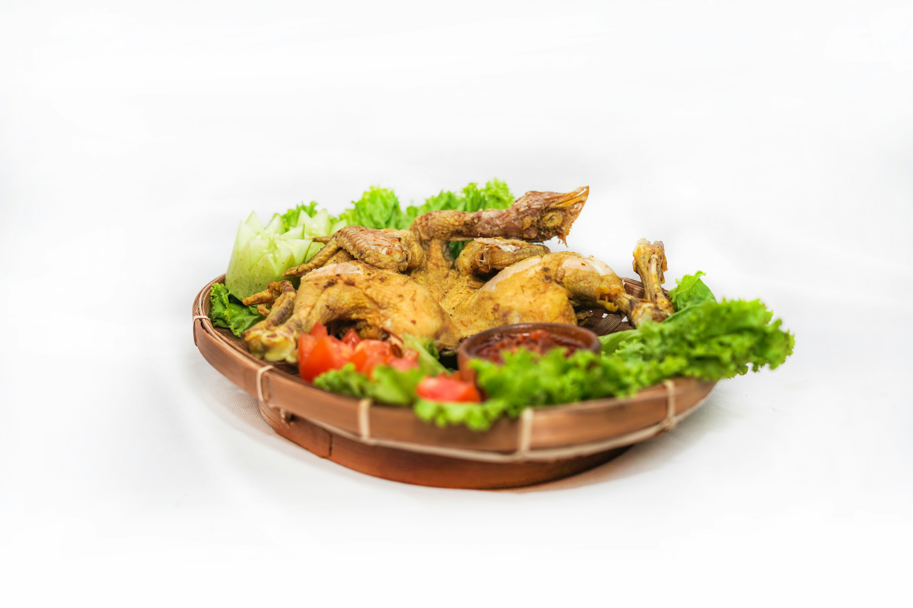

Resep Ayam Goreng Krispi
Bahan: 500g ayam, tepung, garam, dll.
Langkah: 1. Marinasi ayam... 2. Goreng hingga krispi.
Tip: Gunakan minyak panas untuk hasil terbaik.
Bahan: 500g ayam, tepung, garam, dll.
Langkah: 1. Marinasi ayam... 2. Goreng hingga krispi.
Tip: Gunakan minyak panas untuk hasil terbaik.